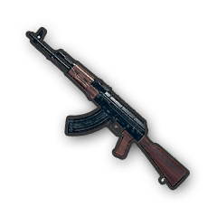
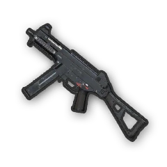
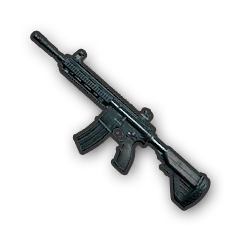
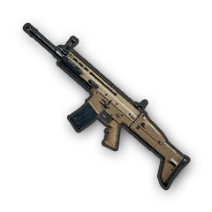
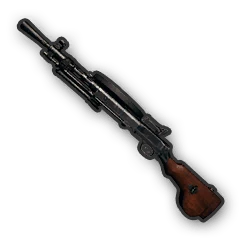

A bullpup style shotgun that can hold up to 14 shells of 12 Gauge lethality, it has by far the largest damage potential of any shotgun available in the game.

AKM
A powerful assault rifle that uses 7.62mm ammunition, this rifle does more damage than the 5.56mm assault rifles and comes with a kick to match.

UMP45
The UMP45 deals the second highest damage of all the SMGs, right behind the Tommy Gun, making it a very viable late-stage gun when fitted out with attachments.

M416
Compared to the other 5.56mm assault rifles, a fully modified M416 is highly sought after as its very low recoil allows for controllable fully automatic fire.

SCAR-L
The SCAR-L is a relatively stable assault rifle, with a rate of fire that, together with its moderately low recoil, allows it to be easy to control.

DP-28
A slow but hard hitting machine gun, its distinctive 47-round pan magazine strikes a balance between the firepower of a full-power cartridge with the support capability of a machine gun.